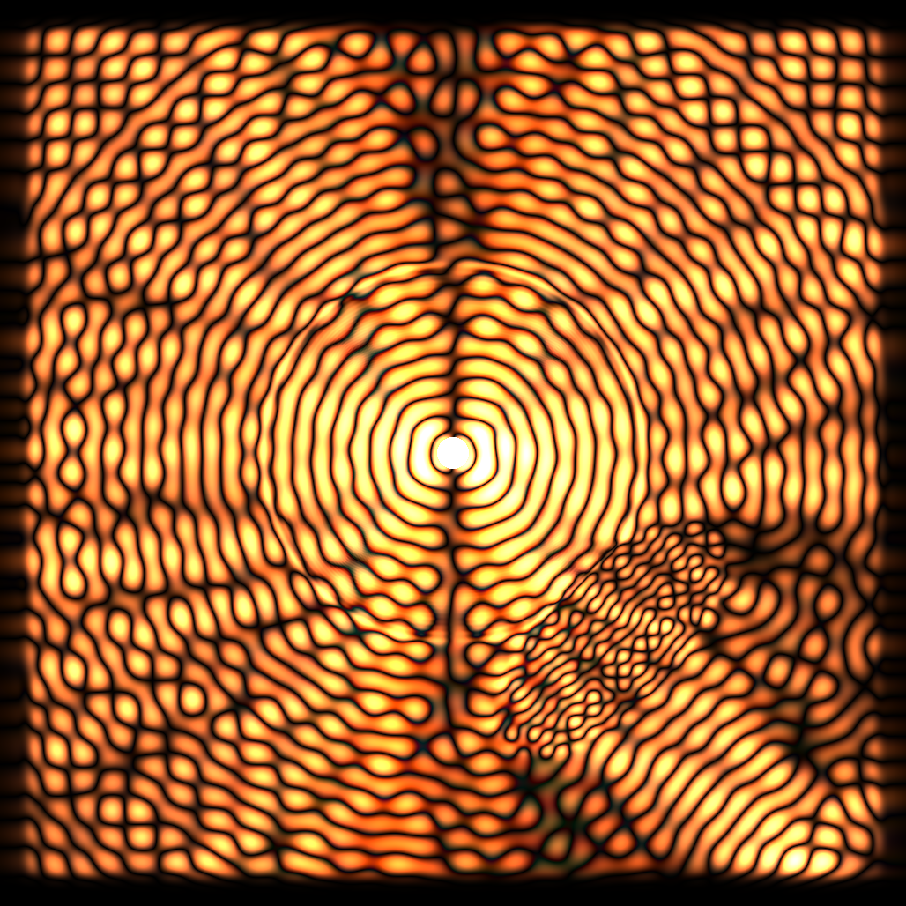
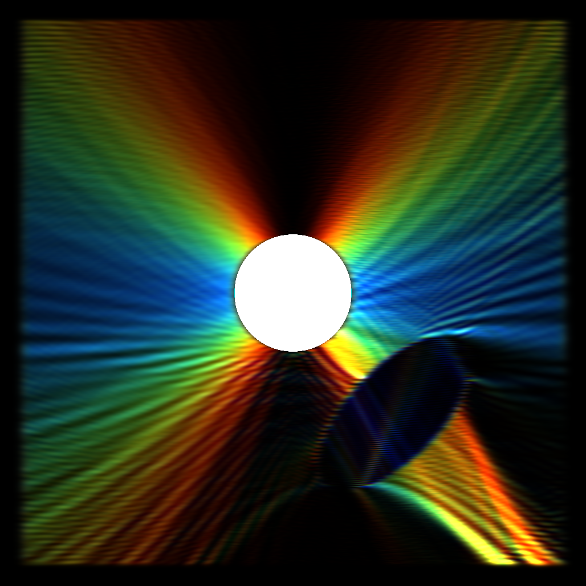
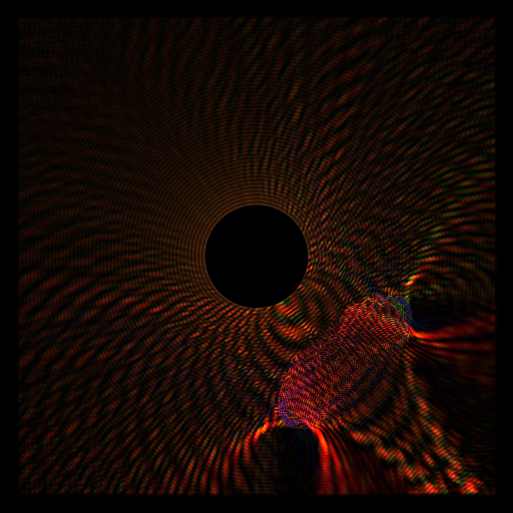

The text accompanying this page will hopefully get some updates in the future, but I wanted to get around to uploading this so people could play with it. In particular, try changing the "averaging filter constant", "white intensity", and ("steps per frame" to control the simulation speed according to what your hardware supports).
This started out as me wanting to make an interactive tool to visualize how chromatic aberration arises in lenses. At first I thought this could be relatively straightforward, just do some ray tracing with various wavelengths and wavelength dependent properties right? Then I started thinking about how it might be cool to also simulate diffraction effects, and this led me down a rabbit hole... diffraction is a lot trickier than just tracing rays. I've played around a lot with the classic wave simulation stuff ([Fast Water Simulation for Games Using Height Fields]) you see in a lot of games/demos, which is just a super simple PDE solver taking the Laplacian on a grid of values to compute updates to a velocity (Keenan Crane has a great lecture on the Laplace operator that you should watch, it really helped me understand things better [video]). I figured why not use the classic wave equation directly to simulate light. I was already pretty sure this wouldn't be too physically accurate but I wanted to see what it would actually look like and how far I could get with the idea before I ran into problems (I find this is always a good way to learn new things). So a caveat before you read more, I'm not an expert on this stuff and you need to do something smarter (finite-difference time-domain method) to properly account for all the stuff going on in Maxwell's equations.
Anyway, I figured I could use the standard wave equation and vary the wave speed of a material region to get interfaces for refraction effects. A light source would be akin to some kind of sinusoidal pumping region which moved at a specific frequency. This worked as expected, giving reflection, bounces, etc. But my visualization was pretty... boring. I was showing the amplitude of the waves and that's pretty much it:

What you can see here: there's a light source, some interesting standing waves since this is all happening in a small cavity, and a little lens in the lower right focusing some waves. I wanted to actually display the proper color of light sources dependent on their frequency. This led me down yet another rabbit hole. The obvious thing to do is just set the color based on the frequency of light at a particular point right? Well pause for a moment and think - how do you get that frequency? My first thought was to "use the Fourier transform" to get the frequency. Well after this "dumb" thought I noticed the obvious problems with it. The Fourier transform gives a basically incomprehensible image which looks nothing like the spatial version. We need the frequency at specific locations. The Fourier transform is also stupidly slow so you need to process the whole image. I didn't like this option, so I researched a bit and found out wavelet transforms are a thing. You can essentially convolve your spatial data with spatially limited "wavelets" to get information about the "approximate" frequency at a specific region. This sounded a lot more shader friendly, and the "spatially limited" nature of the wavelets meant I would get something that was like a blurrier version of my image. But after trying this out, I got this image and had to think some more:

Sure it looks cool, but it's not really what I wanted to achieve. This is a picture of a *single* wavelength source with some kind of wavelet transform applied to get an approximation of the "frequency" at each point in order to color it (I think I used a Gabor wavelet). What I liked is that the colors were now smoothly varying and not "wavy" like the amplitude viz. One problem though, wavelet transforms don't actually give a precise frequency, it's more of an arbitrary value dependent on your wavelets. You can sort of remap this to frequencies but it's not a precise/exact value. Another issue which I thought I could find a solution for: the frequency/wavelength you measure has an orientation dependence. You can see that high frequencies (blue) exist in the X direction from the point source, and low frequencies in the Y direction, to the point it's mostly black past a certain angle. This is because my wavelet was sampling in the X direction. I figured I could do some kind of separation in X and Y and combine them somehow, but this didn't work out and gave muddy results (but a pretty picture at least!):

I was pretty unhappy, wavelets were obviously a dead end and I should have noticed something key before trying them out. This kind of led to a small breakthrough though. I was forcing myself to find the frequency using spatial information, and completely forgot about the possibility of determining the frequency at each point using the time-domain signal. After a lot of thinking I came up with what I think was a really clever solution: I imagined I could simulate tuned mass spring dampers at every single pixel, and these could then be forced by the amplitude of the underlying wave. mass spring dampers have the nice property that they resonate (build up energy) when they're forced at a particular specific frequency. They essentially filter out anything which isn't near their tuned frequency. I imagined getting a few of these and then using this to approximate the frequency for each pixel from the total mechanical energy of the spring damper. Then I had a small epiphany, our eyes sort of work in the same way, photons fly in, excite some molecules on our rods and cones, and this excitation is converted to what we actually see. I figured I could actually match the response of three tuned mass spring dampers at each pixel to the L-cones, M-cones and S-cones which give us color vision, so I went down yet another rabbit hole learning about how to get proper RGB values from LMS excitations (thank you http://www.cvrl.org/, I find it funny this website is ironically kinda hard on the eyes given it's dedicated to vision research). Using some data from there I wrote a little program in python using pytorch for optimization to find mass, spring and damping constants for 3 tuned mass spring dampers in order to get their steady state energy when forced at particular frequencies to match the curves matching LMS response at particular frequencies. You can see this optimization running below:
I also added a non-linear transform to the energy computation with some extra constants to stretch the responses in the right places and get a nicer fit. Actually coding this into a shader ended up being way easier than the wavelet stuff. I was essentially able to build off the existing simulation for the waves and add in a simple simulation for each spring damper's state which runs in parallel to the wave sim at each pixel. What you end up looking at in the sim above are the energies of a sea of little tuned oscillators riding on the underlying wave. The entire field is the surface a big flat eye covered in cones. Obviously this solution isn't without issues, in particular overly intense light and frequency extremes are converted into the "wrong" colors, but you kind of have to wonder how wrong this actually is. Extremely intense light at any frequency shone into your eye or some sensor would also wind up looking wrong, and would also burn/destroy those objects eventually. It's a bit of an idealization in the first place that specific wavelengths map to specific colors of the rainbow, our eyes contain molecules that can break down, and don't behave so differently to the tuned mass spring dampers, but of course their response at the extremes isn't really considered here or realistically matched.
The last thing I needed to figure out was how to get dispersion (color splitting in a prism). It turns out this arises due to interactions of charges in transparent media with the electromagnetic waves, The waves essentially get coupled to an oscillator! So I implemented this in a manner not too different from the wavelength sensors (in fact the simulation runs in the alpha of the float4s for the RGB/LMS sensors). Each pixel of transparent media has an associated spring damper which can push back on the wave. The stiffness/damping varies depending on how strong the effect of dispersion is. This is not really implemented in a totally physically accurate way (the oscillators are coupled to the wave linearly), but its similar enough to permittivity that you can produce dispersion.
The end result I think is really cool to look at and play around with. One thing that I find super interesting is that at this scale white light is really weird. The "white intensity" slider essentially controls how much white noise is in the signal used to "pump" the light source. At full strength the light source is moving with full randomness, which essentially means energy is spread across all frequencies. This is like thermal vibration! In terms of the visualization this leads to pulses of random rainbow color. If you want to see something actually white you need to turn the "averaging filter constant" way down to it's minimum value. When you do this the colors across many frames are averaged. I wonder if this is somehow related to the kind of color noise your eye picks up when it's really dark. Another interesting thing is if you try moving objects or the light source more than 1 pixel per frame, you actually exceed the speed of light and get some high energy artifacts, this is why there's a "source speed" slider, changing x/y was causing some simulation killing artifacts! You also get red shift/blue shift from the source where the waves bunch up/stretch out when you move it! You also see that "laser beams" diverge and can't stay focused, with this divergence being frequency dependent. For white light this manifests as an airy disk!. I hope you enjoy finding these little links to physical phenomena in the simulator, thanks for reading if you got this far!